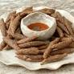

Kanchemba Recipe

Ingredients:
- 1 ½ cup Buckwheat flour
- Water
- Salt
- Ghee
- 1 tsp lightly roasted Szechuan pepper
- 5-6 fresh Red chilies
- 5-6 Garlic cloves
Procedures:
- Bring around a cup of water to boil in a deep pan or karai. Add buckwheat flour in boiling water with your hand spreading it evenly.
- Turn down the heat to lowest, and work it out with wooden spatula to make thick dough for around 4-5 mins.
- Turn off the heat. Add some salt and ghee for flavor. Work it out further with wooden spatula.
- Let the cooked dough rest for around five minutes to drop its temperature to warm.
- While dough is resting, prepare achaar. Grind salt and Szechuan pepper in mortar and pestle, and then chili and garlic to fine paste. Add roasted tomatoes and grind them together to make achaar.
- Grease your hands. Take small ball (marble size) of dough, and make buckwheat fingers with tapered ends using your palms as shown in the picture above.
- Dust buckwheat fingers with buckwheat flour- it helps to absorb less oil, and make fries crispier.
- In a frying pan, add 5-6 tbs of ghee. When ghee is melted and hot enough, fry buckwheat fingers. It will take a couple of minutes. As they are already cooked, they don’t require much time to fry. Make sure that they are brown and crispy.
- Have it hot with spicy-tingling achaar.